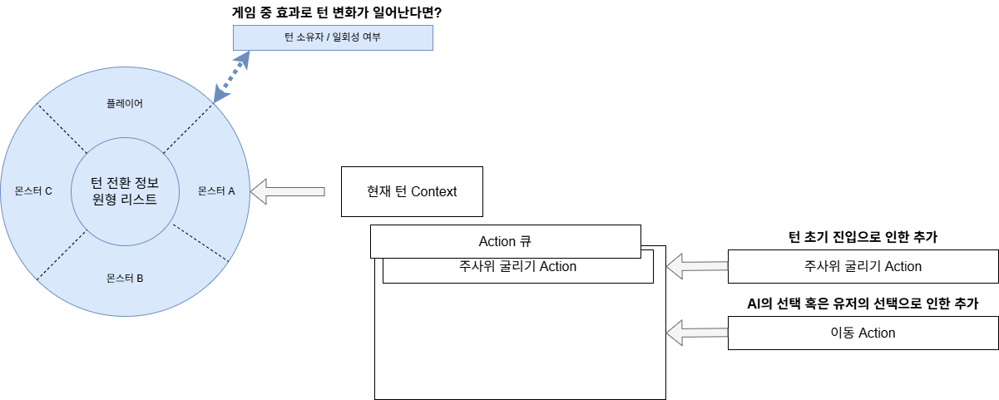
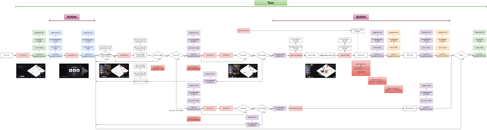

- 다음에 의해 생성됨 :
 1.9.8
1.9.8
|
P_RD 1.0
Rogue the dice Docs
|

SRPG의 전체적인 흐름을 담당하는 SRPGFrameworkSubsystem.h 객체입니다. 원형 리스트를 돌며 턴을 진행하고, 각 턴마다 Turn Context 객체를 생성합니다.
Context는 외부에서 Action 큐를 넣어주어서 진행되는데, 주사위 굴리기 행위, 이동, 스킬 사용과 같은 행위들이 이에 해당합니다.
초기에는 맵에 등록된 몬스터 객체를 우선 흩어서 Unit에 붙은 우선 순위에 따라 원형 리스트를 채워 넣습니다. 같은 우선 순위는 랜덤으로 처리합니다.
단 맵에서 우선 순위 기본값을 Override할 수 있게 하여, 전투 순서 변주를 줄 수 있도록 고려중입니다.
원형 리스트의 자료구조 특성 상 어렵지 않게 가능하다 생각합니다. 자료구조의 데이터를 이루는 턴 구성 정보 구조체는 Owner와 삭제 필요성 bool 데이터로 이루어집니다.
삭제 필요성 여부에 따라 턴 종료 시에 해당 구조체를 리스트에서 삭제합니다.
턴 시작 시에 반드시 거쳐가는 주사위 굴리기 액션같은 경우, Context 생성과 함께 추가합니다.
각 Action의 흐름이 종료되는 시점에서 확인합니다. 예를 들어 공격 스킬 중간에 턴이 끝나면, 스킬 처리 완료 이후에 턴을 종료합니다.
